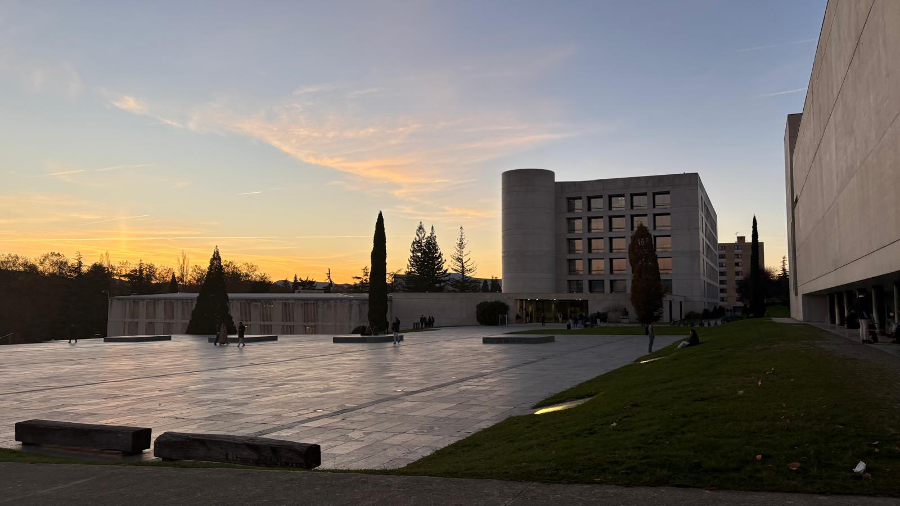
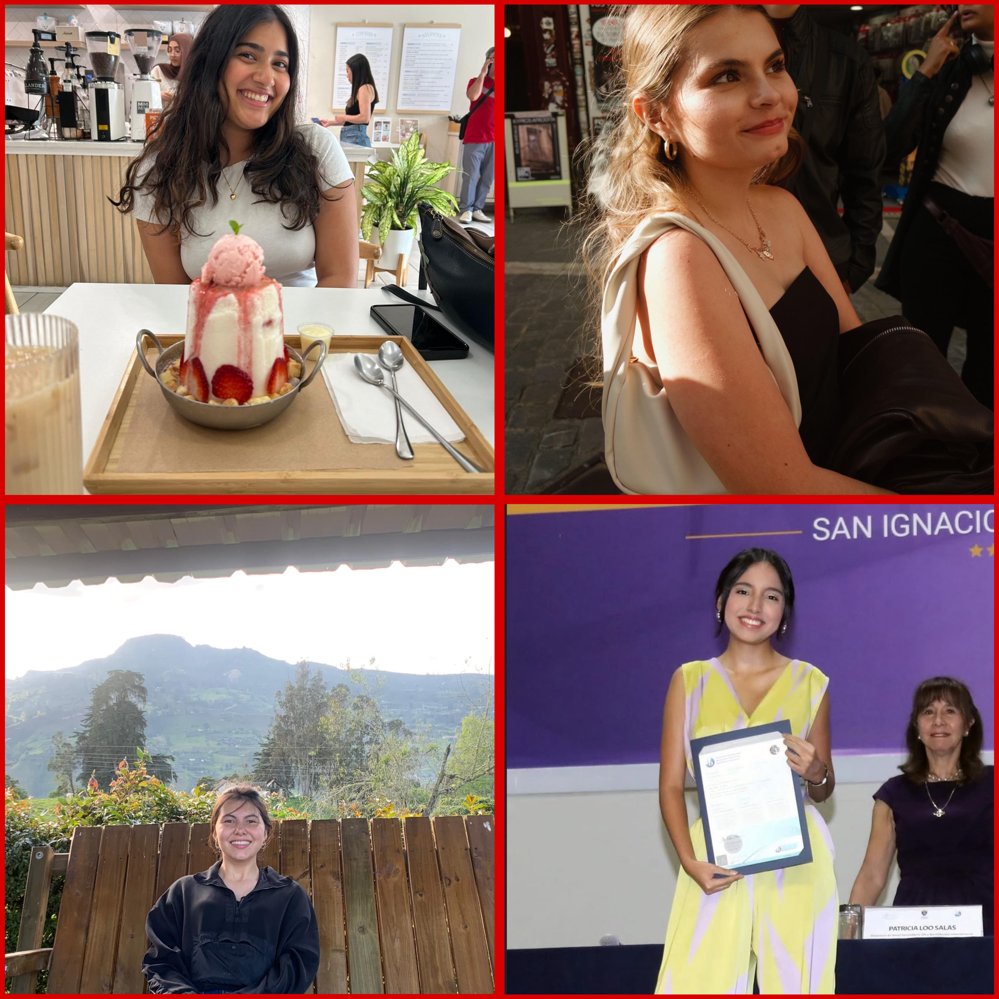
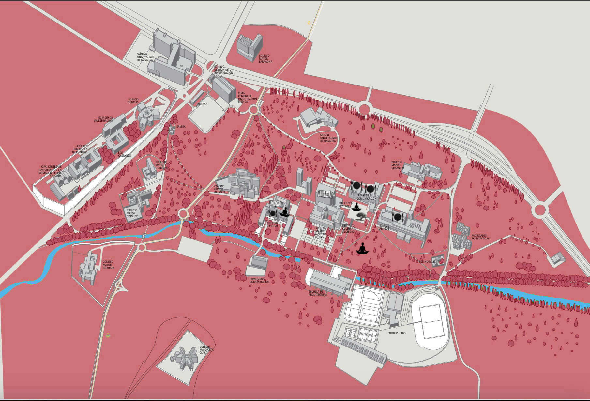

siga abajo
quienes somos

Nosotras somos Paz, Maria, Medha y Cristina tres de nosotras somos estudiantes de
primero de
periodismo y Medha es una compañera de intercambio. Y nosotras creamos la cuenta de UNAV Spots.
Este proyecto fue creado para la asignatura de Comunicación Multimedia. Desde el principio,
quisimos crear algo con lo que personas pudieran sentirse identificadas.
No quisimos hacer un proyecto pasado en un tema tan general, porque nuestro objetivo era
enfocarnos en un público más concreto, ya que así podíamos profundizar y presentar temas más
sólidos.
Buscábamos que cada elemento en el proyecto influyera de alguna manera a nuestro público, y que
tuviera un propósito claro para que las personas que vieran el contenido pudieran apreciar
totalmente nuestra creatividad y que lo pudieran disfrutar.
Proyecto de alumnos de Comunicación Multimedia 2025/26, Fcom/Unav. Todas las marcas comerciales
citadas son propiedad de sus respectivos titulares.
Mapa
